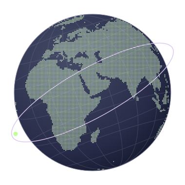

İHTİMAL / VERİ ATLASI
Bir dünya,
farklı hayatlar.
Doğduğun yer yaşam koşullarını nasıl değiştirir? Ülkeleri karşılaştır, değişimi yıllar boyunca izle.
Atlası keşfet ↘
ÜLKELER ARASI KARŞILAŞTIRMA
Yaşam göstergeleri
Veriler yükleniyor…
Yıllık değerler ve kaynak
AÇIK VERİ
Kaynak arşivi
Türkiye, Nijerya ve Japonya veritabanını indir (SQLite) ↓
Bölgelere göre veriler
KARAR SİMÜLASYONU